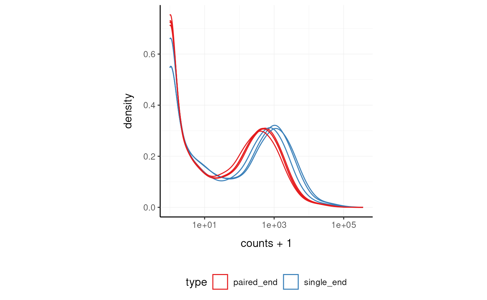

Overview of the tidySE package
Stefano Mangiola
2020-09-12
introduction.Rmd
Brings SummarizedExperiment to the tidyverse!
website: stemangiola.github.io/tidySE/
Please also have a look at
- tidySCE for tidy manipulation of Seurat objects
- tidyseurat for tidy manipulation of Seurat objects
- tidybulk for tidy high-level data analysis and manipulation
- nanny for tidy high-level data analysis and manipulation
- tidygate for adding custom gate information to your tibble
- tidyHeatmap for heatmaps produced with tidy principles
Introduction
tidySE provides a bridge between Bioconductor SummarizedExperiment (Morgan et al. 2020) and the tidyverse (Wickham et al. 2019). It creates an invisible layer that enables viewing the Bioconductor SummarizedExperiment object as a tidyverse tibble, and provides SummarizedExperiment-compatible dplyr, tidyr, ggplot and plotly functions. This allows users to get the best of both Bioconductor and tidyverse worlds.
Functions/utilities available
| SummarizedExperiment-compatible Functions | Description |
|---|---|
all |
After all tidySE is a SummarizedExperiment object, just better |
| tidyverse Packages | Description |
|---|---|
dplyr |
Almost all dplyr APIs like for any tibble |
tidyr |
Almost all tidyr APIs like for any tibble |
ggplot2 |
ggplot like for any tibble |
plotly |
plot_ly like for any tibble |
| Utilities | Description |
|---|---|
tidy |
Add tidySE invisible layer over a SummarizedExperiment object |
as_tibble |
Convert cell-wise information to a tbl_df
|
Installation
if (!requireNamespace("BiocManager", quietly=TRUE)) { install.packages("BiocManager") } BiocManager::install("tidySE")
From Github (development)
devtools::install_github("stemangiola/tidySE")
Load libraries used in the examples.
Create tidySE, the best of both worlds!
This is a SummarizedExperiment object but it is evaluated as a tibble. So it is fully compatible both with SummarizedExperiment and tidyverse APIs.
It looks like a tibble
pasilla_tidy
## # A tibble: 102,193 x 5
## sample condition type transcript counts
## <chr> <chr> <chr> <chr> <int>
## 1 untrt1 untreated single_end FBgn0000003 0
## 2 untrt1 untreated single_end FBgn0000008 92
## 3 untrt1 untreated single_end FBgn0000014 5
## 4 untrt1 untreated single_end FBgn0000015 0
## 5 untrt1 untreated single_end FBgn0000017 4664
## 6 untrt1 untreated single_end FBgn0000018 583
## 7 untrt1 untreated single_end FBgn0000022 0
## 8 untrt1 untreated single_end FBgn0000024 10
## 9 untrt1 untreated single_end FBgn0000028 0
## 10 untrt1 untreated single_end FBgn0000032 1446
## # … with 102,183 more rowsBut it is a SummarizedExperiment object after all
pasilla_tidy@assays
## An object of class "SimpleAssays"
## Slot "data":
## List of length 1
## names(1): countsTidyverse commands
We can use tidyverse commands to explore the tidy SummarizedExperiment object.
We can use slice to choose rows by position, for example to choose the first row.
pasilla_tidy %>% slice(1)
## # A tibble: 1 x 5
## sample condition type transcript counts
## <chr> <chr> <chr> <chr> <int>
## 1 untrt1 untreated single_end FBgn0000003 0We can use filter to choose rows by criteria.
pasilla_tidy %>% filter(condition == "untreated")
## # A tibble: 58,396 x 5
## sample condition type transcript counts
## <chr> <chr> <chr> <chr> <int>
## 1 untrt1 untreated single_end FBgn0000003 0
## 2 untrt1 untreated single_end FBgn0000008 92
## 3 untrt1 untreated single_end FBgn0000014 5
## 4 untrt1 untreated single_end FBgn0000015 0
## 5 untrt1 untreated single_end FBgn0000017 4664
## 6 untrt1 untreated single_end FBgn0000018 583
## 7 untrt1 untreated single_end FBgn0000022 0
## 8 untrt1 untreated single_end FBgn0000024 10
## 9 untrt1 untreated single_end FBgn0000028 0
## 10 untrt1 untreated single_end FBgn0000032 1446
## # … with 58,386 more rowsWe can use select to choose columns.
pasilla_tidy %>% select(sample)
## # A tibble: 102,193 x 1
## sample
## <chr>
## 1 untrt1
## 2 untrt1
## 3 untrt1
## 4 untrt1
## 5 untrt1
## 6 untrt1
## 7 untrt1
## 8 untrt1
## 9 untrt1
## 10 untrt1
## # … with 102,183 more rowsWe can use count to count how many rows we have for each sample.
pasilla_tidy %>% count(sample)
## # A tibble: 7 x 2
## sample n
## <chr> <int>
## 1 trt1 14599
## 2 trt2 14599
## 3 trt3 14599
## 4 untrt1 14599
## 5 untrt2 14599
## 6 untrt3 14599
## 7 untrt4 14599We can use distinct to see what distinct sample information we have.
pasilla_tidy %>% distinct(sample, condition, type)
## # A tibble: 7 x 3
## sample condition type
## <chr> <chr> <chr>
## 1 untrt1 untreated single_end
## 2 untrt2 untreated single_end
## 3 untrt3 untreated paired_end
## 4 untrt4 untreated paired_end
## 5 trt1 treated single_end
## 6 trt2 treated paired_end
## 7 trt3 treated paired_endWe could use rename to rename a column. For example, to modify the type column name.
pasilla_tidy %>% rename(sequencing=type)
## # A tibble: 102,193 x 5
## sample condition sequencing transcript counts
## <chr> <chr> <chr> <chr> <int>
## 1 untrt1 untreated single_end FBgn0000003 0
## 2 untrt1 untreated single_end FBgn0000008 92
## 3 untrt1 untreated single_end FBgn0000014 5
## 4 untrt1 untreated single_end FBgn0000015 0
## 5 untrt1 untreated single_end FBgn0000017 4664
## 6 untrt1 untreated single_end FBgn0000018 583
## 7 untrt1 untreated single_end FBgn0000022 0
## 8 untrt1 untreated single_end FBgn0000024 10
## 9 untrt1 untreated single_end FBgn0000028 0
## 10 untrt1 untreated single_end FBgn0000032 1446
## # … with 102,183 more rowsWe could use mutate to create a column. For example, we could create a new type column that contains single and paired instead of single_end and paired_end.
## # A tibble: 102,193 x 5
## sample condition type transcript counts
## <chr> <chr> <chr> <chr> <int>
## 1 untrt1 untreated single FBgn0000003 0
## 2 untrt1 untreated single FBgn0000008 92
## 3 untrt1 untreated single FBgn0000014 5
## 4 untrt1 untreated single FBgn0000015 0
## 5 untrt1 untreated single FBgn0000017 4664
## 6 untrt1 untreated single FBgn0000018 583
## 7 untrt1 untreated single FBgn0000022 0
## 8 untrt1 untreated single FBgn0000024 10
## 9 untrt1 untreated single FBgn0000028 0
## 10 untrt1 untreated single FBgn0000032 1446
## # … with 102,183 more rowsWe could use unite to combine multiple columns.into a single column.
## # A tibble: 102,193 x 4
## sample group transcript counts
## <chr> <chr> <chr> <int>
## 1 untrt1 untreated_single_end FBgn0000003 0
## 2 untrt1 untreated_single_end FBgn0000008 92
## 3 untrt1 untreated_single_end FBgn0000014 5
## 4 untrt1 untreated_single_end FBgn0000015 0
## 5 untrt1 untreated_single_end FBgn0000017 4664
## 6 untrt1 untreated_single_end FBgn0000018 583
## 7 untrt1 untreated_single_end FBgn0000022 0
## 8 untrt1 untreated_single_end FBgn0000024 10
## 9 untrt1 untreated_single_end FBgn0000028 0
## 10 untrt1 untreated_single_end FBgn0000032 1446
## # … with 102,183 more rowsWe can also combine commands with the tidyverse pipe %>%.
For example, we could combine group_by and summarise to get the total counts for each sample.
## # A tibble: 7 x 2
## sample total_counts
## <chr> <int>
## 1 trt1 18670279
## 2 trt2 9571826
## 3 trt3 10343856
## 4 untrt1 13972512
## 5 untrt2 21911438
## 6 untrt3 8358426
## 7 untrt4 9841335We could combine group_by, mutate and filter to get the transcripts with mean count > 0.
pasilla_tidy %>% group_by(transcript) %>% mutate(mean_count=mean(counts)) %>% filter(mean_count > 0)
## # A tibble: 86,513 x 6
## # Groups: transcript [12,359]
## sample condition type transcript counts mean_count
## <chr> <chr> <chr> <chr> <int> <dbl>
## 1 untrt1 untreated single_end FBgn0000003 0 0.143
## 2 untrt1 untreated single_end FBgn0000008 92 99.6
## 3 untrt1 untreated single_end FBgn0000014 5 1.43
## 4 untrt1 untreated single_end FBgn0000015 0 0.857
## 5 untrt1 untreated single_end FBgn0000017 4664 4672.
## 6 untrt1 untreated single_end FBgn0000018 583 461.
## 7 untrt1 untreated single_end FBgn0000022 0 0.143
## 8 untrt1 untreated single_end FBgn0000024 10 7
## 9 untrt1 untreated single_end FBgn0000028 0 0.429
## 10 untrt1 untreated single_end FBgn0000032 1446 1085.
## # … with 86,503 more rowsPlotting
my_theme <- list( scale_fill_brewer(palette="Set1"), scale_color_brewer(palette="Set1"), theme_bw() + theme( panel.border=element_blank(), axis.line=element_line(), panel.grid.major=element_line(size=0.2), panel.grid.minor=element_line(size=0.1), text=element_text(size=12), legend.position="bottom", aspect.ratio=1, strip.background=element_blank(), axis.title.x=element_text(margin=margin(t=10, r=10, b=10, l=10)), axis.title.y=element_text(margin=margin(t=10, r=10, b=10, l=10)) ) )
We can treat pasilla_tidy as a normal tibble for plotting.
Here we plot the distribution of counts per sample.
pasilla_tidy %>% tidySE::ggplot(aes(counts + 1, group=sample, color=`type`)) + geom_density() + scale_x_log10() + my_theme

Session Info
## R version 4.0.2 Patched (2020-09-10 r79182)
## Platform: x86_64-pc-linux-gnu (64-bit)
## Running under: Ubuntu 20.04.1 LTS
##
## Matrix products: default
## BLAS/LAPACK: /usr/lib/x86_64-linux-gnu/openblas-openmp/libopenblasp-r0.3.8.so
##
## locale:
## [1] LC_CTYPE=en_US.UTF-8 LC_NUMERIC=C
## [3] LC_TIME=en_US.UTF-8 LC_COLLATE=en_US.UTF-8
## [5] LC_MONETARY=en_US.UTF-8 LC_MESSAGES=C
## [7] LC_PAPER=en_US.UTF-8 LC_NAME=C
## [9] LC_ADDRESS=C LC_TELEPHONE=C
## [11] LC_MEASUREMENT=en_US.UTF-8 LC_IDENTIFICATION=C
##
## attached base packages:
## [1] parallel stats4 stats graphics grDevices utils datasets
## [8] methods base
##
## other attached packages:
## [1] tidySE_0.99.1 SummarizedExperiment_1.19.6
## [3] DelayedArray_0.15.7 matrixStats_0.56.0
## [5] Matrix_1.2-18 Biobase_2.49.1
## [7] GenomicRanges_1.41.6 GenomeInfoDb_1.25.11
## [9] IRanges_2.23.10 S4Vectors_0.27.12
## [11] BiocGenerics_0.35.4 ggplot2_3.3.2
## [13] knitr_1.29 BiocStyle_2.17.0
##
## loaded via a namespace (and not attached):
## [1] tidyselect_1.1.0 xfun_0.17 purrr_0.3.4
## [4] lattice_0.20-41 colorspace_1.4-1 vctrs_0.3.4
## [7] generics_0.0.2 htmltools_0.5.0 yaml_2.2.1
## [10] utf8_1.1.4 rlang_0.4.7 pkgdown_1.6.0.9000
## [13] pillar_1.4.6 glue_1.4.2 withr_2.2.0
## [16] RColorBrewer_1.1-2 GenomeInfoDbData_1.2.3 lifecycle_0.2.0
## [19] stringr_1.4.0 zlibbioc_1.35.0 munsell_0.5.0
## [22] gtable_0.3.0 ragg_0.3.1 memoise_1.1.0
## [25] evaluate_0.14 labeling_0.3 fansi_0.4.1
## [28] scales_1.1.1 backports_1.1.9 BiocManager_1.30.10
## [31] desc_1.2.0 cpp11_0.2.1 XVector_0.29.3
## [34] farver_2.0.3 systemfonts_0.3.1 fs_1.5.0
## [37] digest_0.6.25 stringi_1.5.3 bookdown_0.20
## [40] dplyr_1.0.2 grid_4.0.2 rprojroot_1.3-2
## [43] cli_2.0.2 tools_4.0.2 bitops_1.0-6
## [46] magrittr_1.5 RCurl_1.98-1.2 tibble_3.0.3
## [49] tidyr_1.1.2 crayon_1.3.4 pkgconfig_2.0.3
## [52] ellipsis_0.3.1 assertthat_0.2.1 rmarkdown_2.3
## [55] R6_2.4.1 compiler_4.0.2References
Morgan, Martin, Valerie Obenchain, Jim Hester, and Hervé Pagès. 2020. SummarizedExperiment: SummarizedExperiment Container.
Wickham, Hadley, Mara Averick, Jennifer Bryan, Winston Chang, Lucy D’Agostino McGowan, Romain François, Garrett Grolemund, et al. 2019. “Welcome to the Tidyverse.” Journal of Open Source Software 4 (43): 1686.